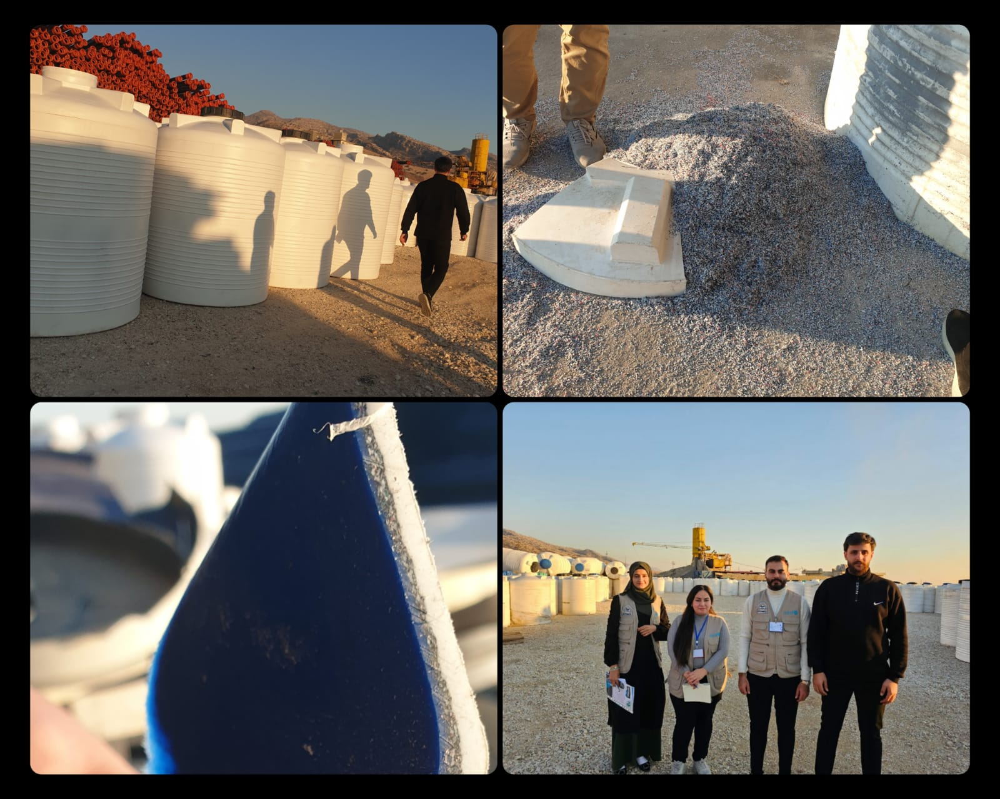
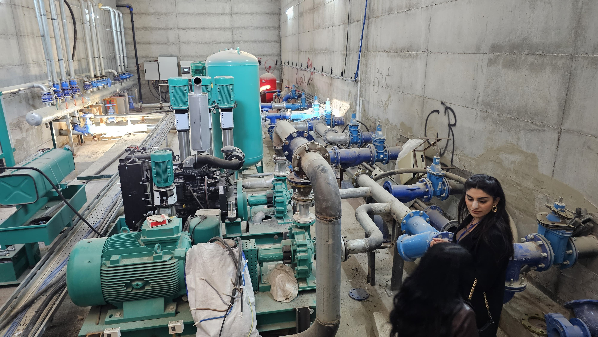
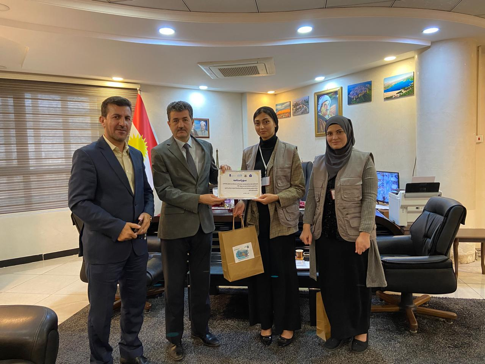
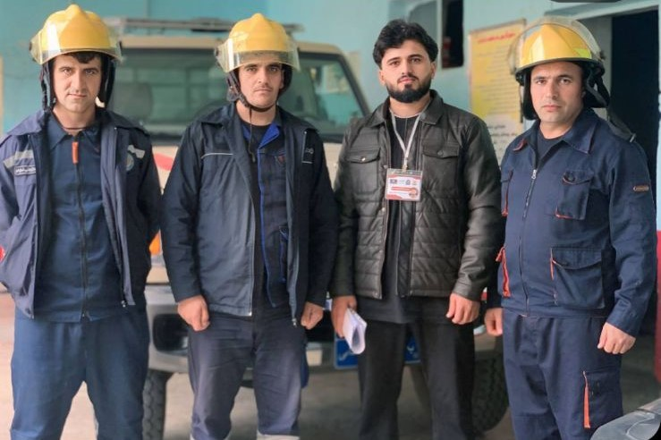

Aqua Heroes
The Impact of Household Water Storage Tanks on Water Quality and Public Health in Duhok City
This research explores household water storage practices and their impact on water quality and health in Duhok City, Iraq. Conducted with UNICEF, it uses surveys, interviews, and lab tests to recommend policy and public solutions for safer water management.
More information

Life Makers
Empowering Farmers with Hydroponic Farming
Lifemakers Group project by University of Duhok students empowers farmers in Duhok through hydroponic farming, promoting sustainable agriculture with support from UNICEF.
More information
Navy
Plastic Pollution in Duhok’s Water & Its Environmental Impact
The Navy Group from the University of Duhok conducted a PAR project with UNICEF to address plastic pollution in Duhok’s water. The project explored community awareness, waste management practices, and proposed solutions to reduce plastic impact on local water sources.
More information

Light
Sustainable Car Wash Solutions – Duhok, Kurdistan
The Light Group from the University of Duhok conducted a Participatory Action Research project on sustainable car wash solutions in Duhok, focusing on wastewater treatment and reuse to address water scarcity.
More information
Havdast
Treated Wastewater Awareness Project
The Havdast Group, in partnership with UNICEF and the University of Duhok, led a project to raise awareness about treated wastewater reuse for agriculture in Duhok. The initiative aimed to assess public perception, highlight benefits, and promote sustainable water practices amid Iraq’s water crisis.
More information

Eco-friendly
Tackling Flooding and Erosion in Duhok
The Eco-friendly Group from the University of Duhok, in collaboration with UNICEF, addressing flooding and erosion in the Hishkaro River area through surveys, GIS mapping, and sustainable solutions.
More information
Challengers
Multi-Sector Wastewater Recycling for a Water-Secure Duhok
The Challengers Group, students from the University of Duhok, conducted a research project with UNICEF to explore multi-sector wastewater recycling as a solution to water scarcity in Duhok. The project highlights key barriers, sectoral gaps, and policy recommendations for sustainable water use.
More information

Blue Planet
Greywater Recycling for Sustainable Water Use
The Blue Planet Group, students from the University of Duhok, conducted a PAR project with UNICEF to explore greywater recycling as a sustainable solution to water scarcity in Duhok.